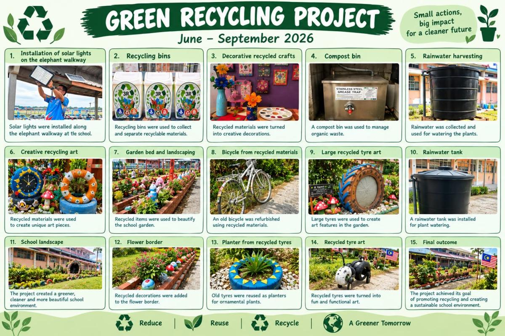
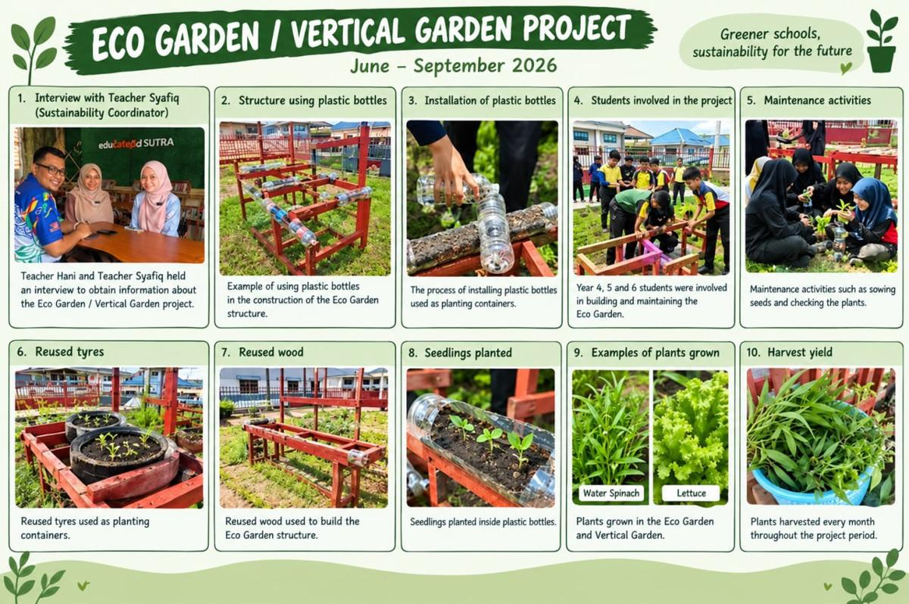

Green Recycling • Jun–September
Daripada sisa kepada sumber
Pengasingan bahan kitar semula dan penghasilan hiasan daripada bahan terpakai menjadikan amalan guna semula sebahagian persekitaran sekolah.
Lihat rekod dan batasan data ↗Perubahan bermula dengan pendidikan. Bersama SK Sungai Tiram, kita menyemai kesedaran dan menggerakkan tindakan untuk bumi yang lebih baik.

Kenali kempen sekolah melalui video promo kami. Bersama murid, guru dan komuniti, setiap tindakan kecil menyemai perubahan.
Tonton di TikTok ↗Video daripada @sksungaitiram.official. Jika pemain tidak dimuatkan, gunakan butang TikTok.
Laman ini menghimpunkan kempen pendidikan hijau SK Sungai Tiram sempena penyertaan Green School Award 2026.
Kami mengajak murid, guru, ibu bapa dan komuniti meneroka bagaimana pembelajaran dan tindakan harian boleh menyumbang kepada kelestarian.
Enam tonggak kerangka award menjadi panduan untuk menghubungkan kepimpinan, pembelajaran dan tindakan komuniti.
Usaha sekolah merangkumi penjimatan sumber, pembelajaran melalui kebun dan penggunaan semula bahan.

Pengasingan bahan kitar semula dan penghasilan hiasan daripada bahan terpakai menjadikan amalan guna semula sebahagian persekitaran sekolah.
Lihat rekod dan batasan data ↗Soal selidik amalan penggunaan elektrik melibatkan 119 responden. Air tadahan penghawa dingin digunakan untuk menyiram tanaman.
Terokai data kempen ↗Murid Tahun 4, 5 dan 6 terlibat melalui RBT. Penjagaan harian merangkumi penggemburan tanah, pemeriksaan takungan dan penyemaian semula.
Lihat perkembangan tanaman ↗Angka dibaca bersama sumber, tempoh dan kaedahnya. Maklum balas soal selidik tidak disamakan dengan ukuran penjimatan tenaga.
Bilangan responden yang memilih tahap 5 daripada 119 responden. Label makna skala tidak dinyatakan dalam jadual sumber.
Sumber: Kutipan Data Kumpulan 2, bahagian Energy Saving Campaign. Peratus dikira daripada bilangan ÷ 119 dan dibundarkan kepada satu tempat perpuluhan. Tarikh soal selidik tidak dinyatakan.| Bulan | Penggunaan (kWh) |
|---|---|
| April | 9,572 |
| Mei | 7,268 |
| Jun | 7,313 |
April ke Jun: berkurang 2,259 kWh (23.6%). Jun meningkat 45 kWh berbanding Mei; penurunan tidak berlaku setiap bulan.
| Bulan | Penggunaan (m³) |
|---|---|
| Mac | 619 |
| April | 615 |
| Mei | 608 |
Mac ke Mei: berkurang 11 m³ (1.8%). Perbandingan bil ini tidak membuktikan kesan kempen secara bersendirian.
Sumber: dashboard Pelaporan IMELC 2026, SK Sungai Tiram.Air tadahan penghawa dingin digunakan untuk menyiram tanaman dan pokok bunga.
| Hari | Harvard (L) | Oxford (L) |
|---|---|---|
| Isnin | 45 | 45 |
| Selasa | 90 | 90 |
| Rabu | 90 | 90 |
| Khamis | 90 | 90 |
| Jumaat | 45 | 45 |
| Jumlah | 360 | 360 |
Rekod Jun–September 2026 menjejaki ketinggian tanaman. Temu bual penyelaras menerangkan penjagaan harian dan penglibatan ibu bapa.
| Bulan 2026 | Kangkung | Salad |
|---|---|---|
| Jun | 8 | 5 |
| Julai | 18 | 12 |
| Ogos | 28 | 20 |
| September | 35 | 27 |
Rekod menyenaraikan 50 tanaman bagi setiap jenis pada setiap bulan. Angka bulanan ini tidak dijumlahkan sebagai tanaman unik.
Sumber: Eco Garden Master Data, tab Plant Growth. Kuantiti hasil tuaian tidak tersedia.Temu bual menganggarkan 50 botol, 5 tayar dan 10 unit kayu digunakan. Rekod spreadsheet pula menyenaraikan 800 botol dikumpul dan 300 digunakan sepanjang Jun–September. Skop dan perbezaan kedua-dua rekod belum disahkan; angka botol tidak digunakan sebagai jumlah impak utama.
Bilangan tanaman rosak bulanan belum dikenal pasti sama ada status bulanan atau kumulatif, maka jumlah kerosakan tidak dihitung.
Dokumentasi visual menunjukkan tong pengasingan, hiasan bahan terpakai, pasu tayar dan penghijauan kawasan sekolah.
Spreadsheet bersumberkan analitik agregat Google Forms dengan empat respons. Nota sumber menyenaraikan nilai respons kertas 5, 2, 1 dan 10 kg, tetapi pemetaan kepada bulan tidak dapat disahkan. Oleh itu, jumlah dan trend bulanan tidak dipaparkan.
Satu respons merekodkan 11 kg dihantar kepada vendor dan satu respons merekodkan bayaran RM10. Kedua-duanya tidak dianggap sebagai jumlah keseluruhan kempen atau semestinya transaksi yang sama.
Sumber: Green Recycling System Google Sheets Ready, tab Dashboard dan Notes. Rekod ini dikekalkan berasingan daripada siri pengurusan sisa IMELC bagi mengelakkan pengiraan berganda.
Pilih amalan yang mampu dilakukan di sekolah atau di rumah. Ajak keluarga dan rakan untuk melakukannya bersama.
Tandakan amalan yang anda mahu cuba.
Pilihan disimpan pada pelayar anda sahaja. Tiada data dihantar kepada sekolah.Temu bual Cikgu Syafiq ialah dokumentasi dalaman projek Eco Garden. Pautan berita atau temu bual oleh media luar akan ditambah apabila tersedia.